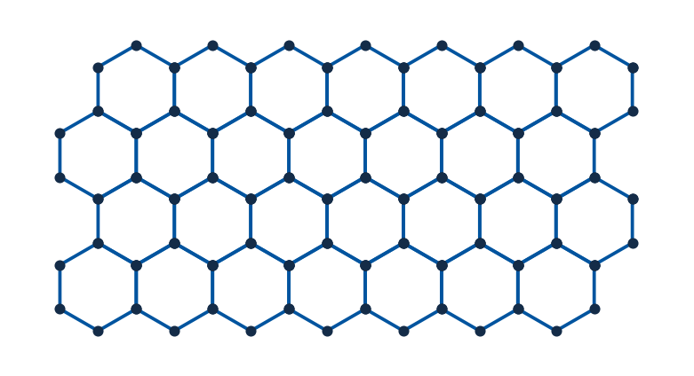
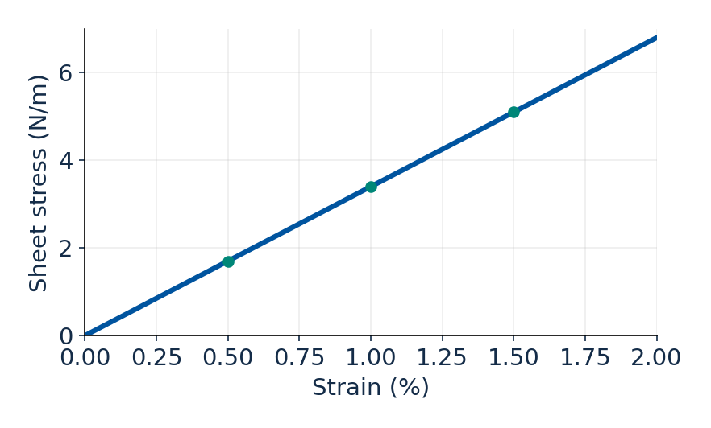
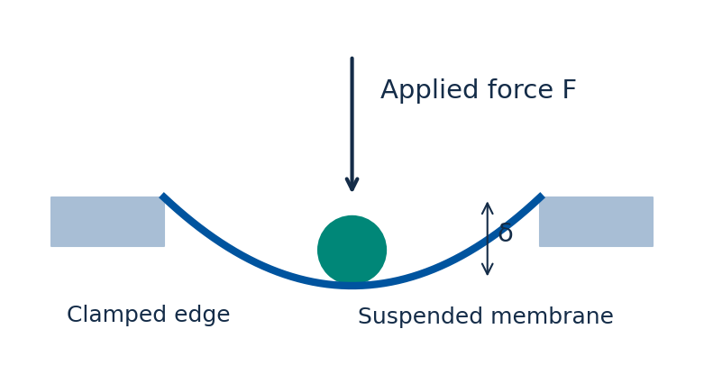
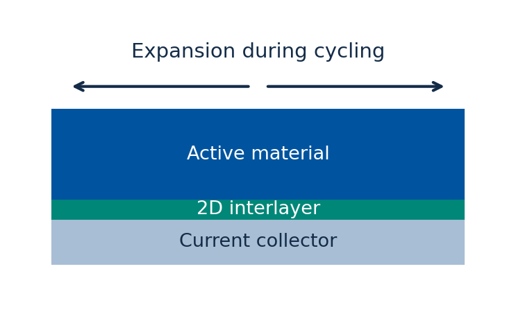

A layer at a time
Graphite is a stack of carbon sheets. Graphene is one of those sheets. Hexagonal boron nitride (h-BN) has alternating boron and nitrogen atoms. A monolayer of MoS₂ has a molybdenum plane between two sulfur planes.
Bachelor lecture · 45 minutes
How can a sheet one atom thick bend easily and still resist stretching? Start with graphene, then use the mechanics of thin sheets to reason about battery interfaces.
Download IAM lecture slidesPowerPoint · 12 slides with instructor notes

Lecture notes
You’ll learn to calculate sheet stress, interpret an indentation experiment and distinguish elastic stiffness from breaking strength. Bring a working knowledge of force, strain and SI units.
Graphite is a stack of carbon sheets. Graphene is one of those sheets. Hexagonal boron nitride (h-BN) has alternating boron and nitrogen atoms. A monolayer of MoS₂ has a molybdenum plane between two sulfur planes.
Stretching changes distances within a sheet. Bending changes its curvature. Bending rigidity measures the energy cost of curvature. A clamped sheet pushed far enough also stretches as it deflects.
Elastic stiffness is the initial slope of a stress–strain curve. Strength measures the stress at failure. A flaw can concentrate stress near its tip and reduce the load needed to cause failure.

For uniaxial tension, engineering strain is ε = ΔL/L₀ and nominal sheet stress is N = F/w₀, where w₀ is the original width. The small-strain sheet modulus is Y₂D = dN/dε. Both sheet stress and sheet modulus have units of N/m.
At 1% strain, a linear sheet with Y₂D = 340 N/m has a sheet stress of 3.4 N/m. A conversion to pascals requires an effective thickness convention.

An atomic force microscope (AFM) pushes the centre of a monolayer suspended over a hole. In a simplified membrane model, F ≈ Aδ + Bδ³. The linear term reflects pretension and the cubic term reflects geometric stretching. Its coefficient also depends on the hole radius, sheet modulus and Poisson ratio.
Lee and colleagues inferred a sheet modulus of approximately 340 N/m and an intrinsic breaking strength of approximately 42 N/m in monolayer graphene under their test conditions. Lee et al. (2008)
Watch and discuss
These companion lessons use original illustrations and synthetic narration. Andre Geim and Konstantin Novoselov shared the 2010 Nobel Prize in Physics for their groundbreaking experiments on graphene. Their original recordings are hosted by NobelPrize.org.
Why can adhesive tape separate thin flakes from graphite? Look for the role of experimentation in Geim’s account.
Andre Geim · Random Walk to Graphene ↗Graphite consists of stacked carbon sheets.
The bonds in each sheet are strong, while the attraction between sheets is much weaker.
That difference makes it possible to peel thin flakes from graphite.
Andre Geim and Konstantin Novoselov pioneered experiments with graphene.
Mechanical exfoliation uses adhesive tape to peel thin flakes.
Identifying a single layer is an essential part of the experiment.
A suspended sheet can curve out of plane with a small bending energy.
Pulling it in plane stretches the carbon bonds.
This is how an atomically thin sheet can bend easily and still resist stretching.
Pause and explain why it is easier to separate sheets in graphite than to pull a carbon sheet apart.
Then listen for the experimental choices in Andre Geim’s Nobel lecture.
What makes a material a monolayer? Use Novoselov’s examples to compare graphene with other 2D crystals.
Konstantin Novoselov · Graphene: Materials in the Flatland ↗Konstantin Novoselov’s Nobel lecture puts graphene in a broader family of two dimensional crystals.
Graphene has one atomic plane.
A monolayer of molybdenum disulfide has three atomic planes in a single structural layer.
Take a thin ribbon and pull along its length.
Divide the tensile force by the ribbon width to get sheet stress in newtons per metre.
The slope of sheet stress versus strain at small strain is the sheet modulus.
Lee and colleagues pushed a suspended graphene membrane with an atomic force microscope.
They fitted the force versus depth curve to infer stiffness.
As the tip pushes farther, the membrane stretches geometrically.
For a sheet modulus of three hundred forty newtons per metre and one percent strain, the linear estimate of sheet stress is three point four newtons per metre.
Pause and predict the force on a ribbon two micrometres wide.
Practice and discussion

During cycling, an active material can swell and shrink, driving interface damage or cracking inside the material. Das et al. discuss how a 2D interlayer might allow sliding and reduce stress transfer in certain material combinations.
Design question. How would you test whether added sliding reduces damage while retaining sufficient adhesion and electrical contact?
ML extension. Pick a measurable target such as interfacial shear strength. Use chemistry, defect density and test conditions as inputs. Compare predictions against a median baseline on a held-out material family and report mean absolute error.
In the linear regime, N = 340 × 0.005 = 1.7 N/m. Multiply by the strip width, 2 × 10⁻⁶ m, to get 3.4 μN.
As the centre moves farther down, the sheet stretches because its edges are clamped. The changing geometry produces a cubic term in the simplified membrane model.
Repeated tests on related interfaces can be very similar. Grouping by family tests how well the model transfers to a family it has never seen.